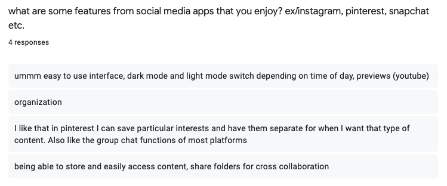

Research Summary
I sent out an initial survey to get insight into the basic of tiktok users. What they normally use it for and what the biggest pain points were to guide a redesign of the application.
Insights
- Most people use it for entertainment & information
- Sometimes for outfit inspiration, recipes, travel
- Features that are missing: folders!! (from people who would like to store organize, easily access content, and share folders for cross collaboration)
- Better messaging integration - group chat availabilities and sharing methods for cross collaboration
Examples of survey questions I distributed and asked:
TAKEAWAY
How can we make tiktok better for cross-collaboration and organized? As someone who uses tiktok like some of the people surveyed, I completely agree that folders and better messaging integration would improve the overall experience and output of the app.
Sketching and Design Process: